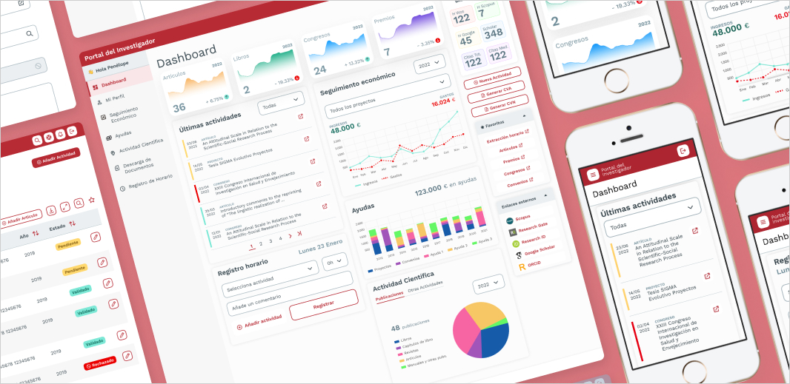
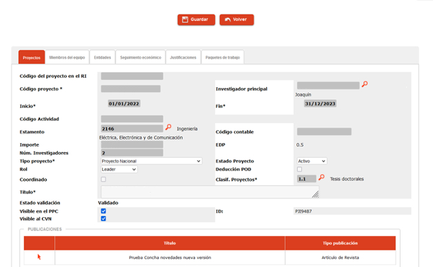
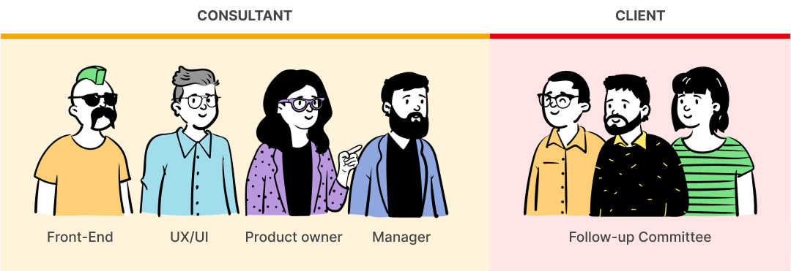
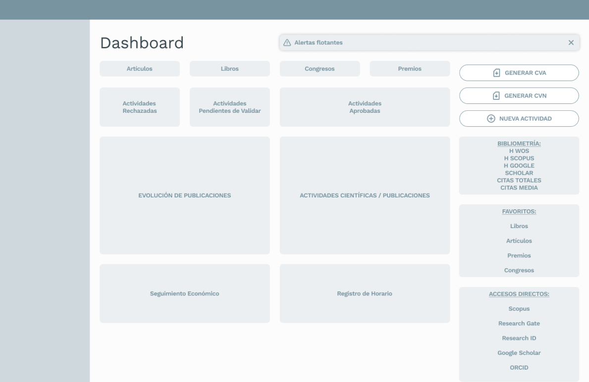
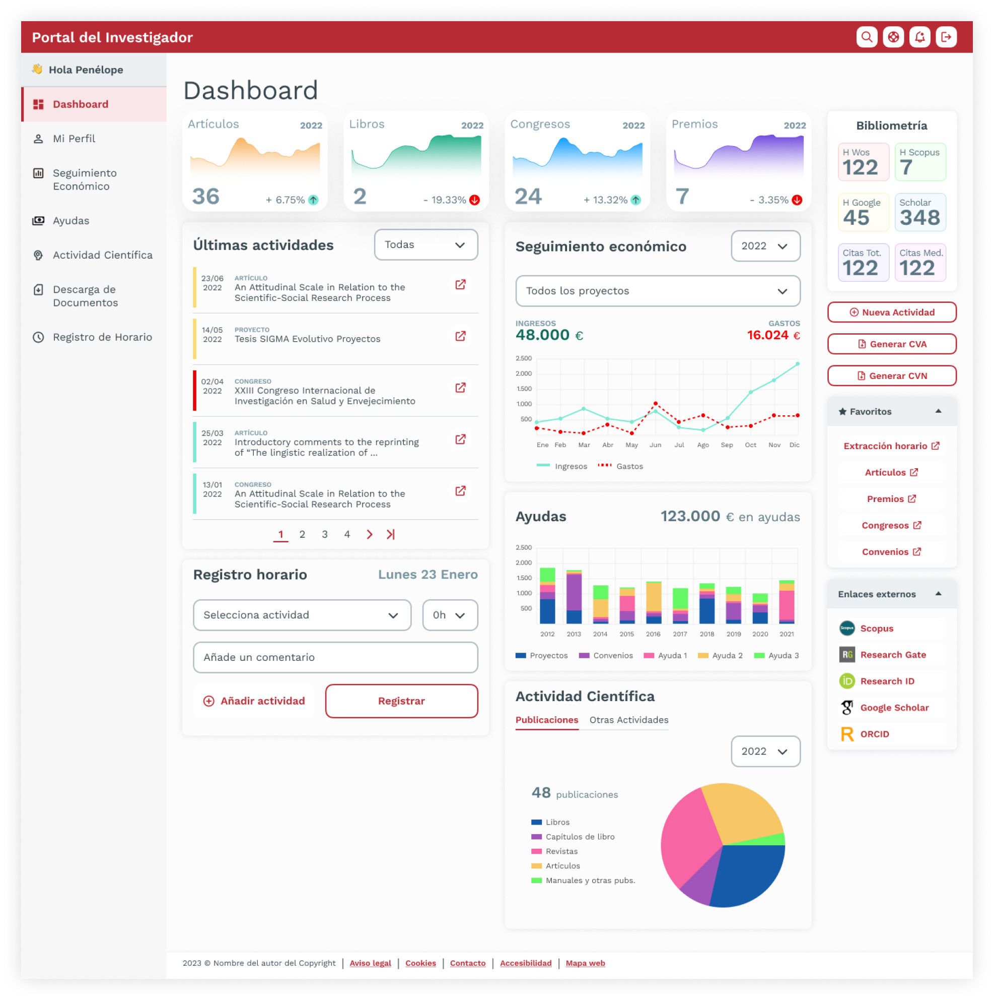
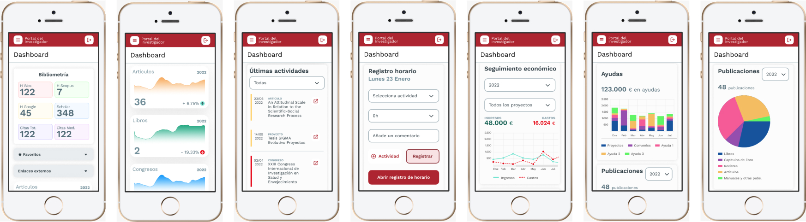
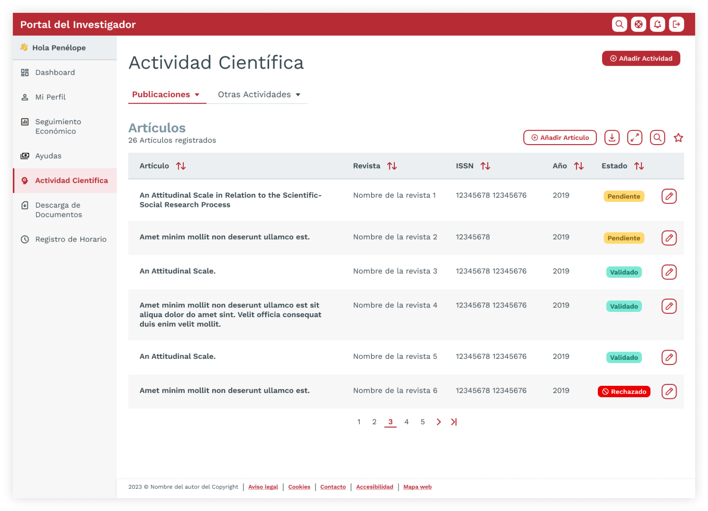
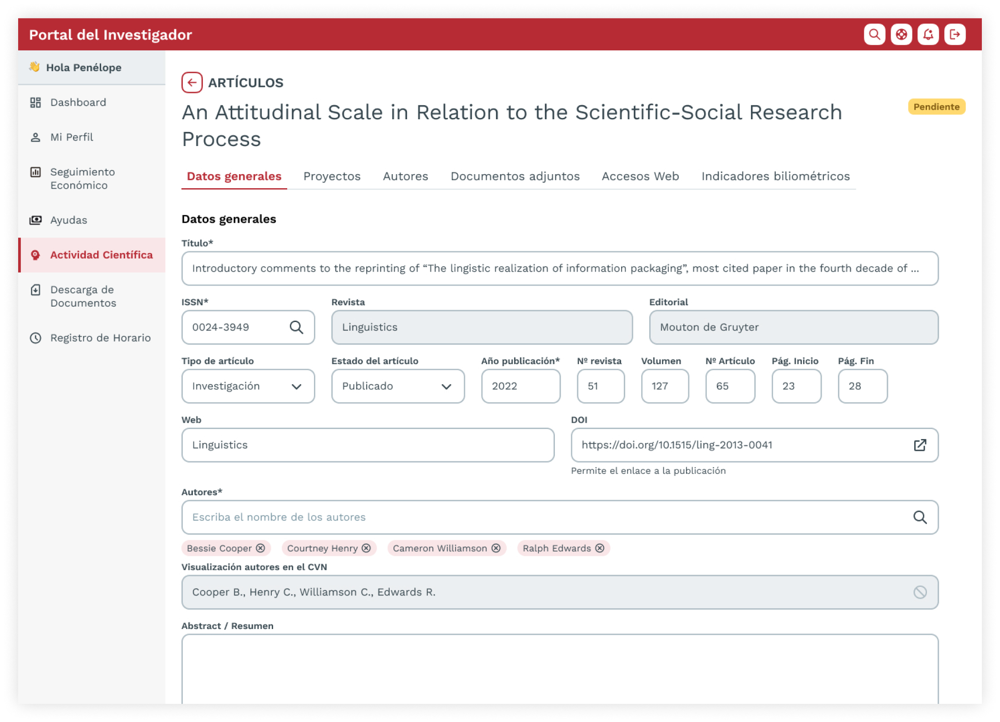
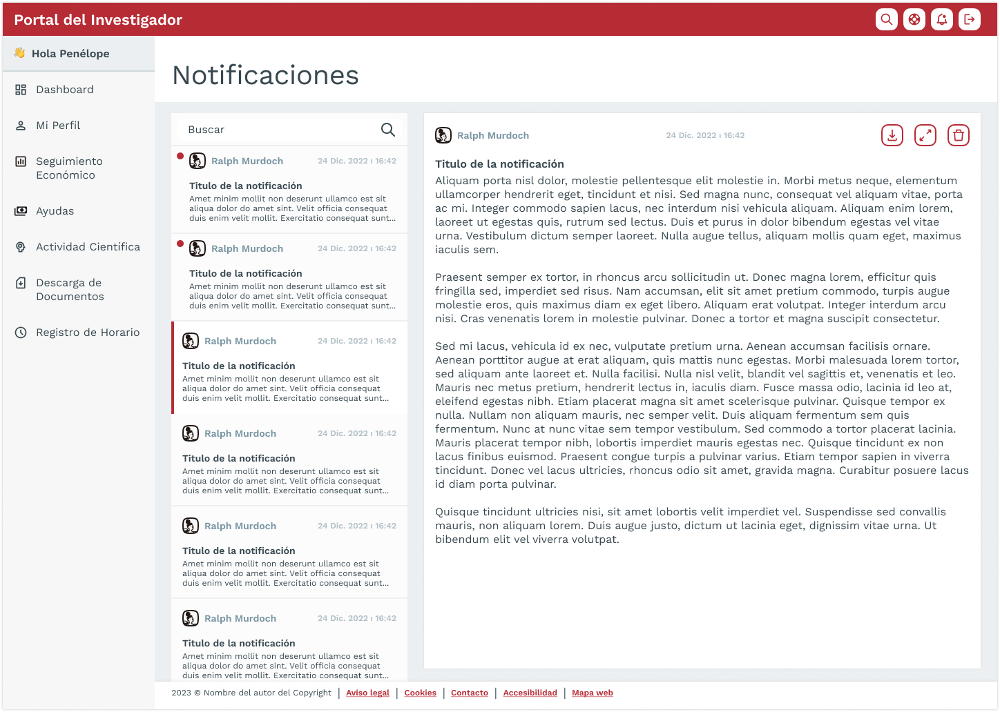

Portal del Investigador

Fecha: Dic 2022 - Abr 2023.
Descripción: Rediseño de la plataforma de gestión financiera y de contenidos para investigadores universitarios.
Rol: Senior UX/UI Designer (Team of one).
Plataforma: Web responsive (escritorio, tablet, móvil).
Metodología: Agile & Design Thinking.
Herramientas: Figma y Miro.
Contexto
A finales de 2022, una organización universitaria nos encargó rediseñar su Portal del Investigador — un hub central donde los académicos registran y gestionan publicaciones, fondos, patentes, congresos y su financiación.
El portal también servía como espacio de colaboración, pero con los años su estética había quedado obsoleta y la usabilidad había decaído.

Antigua página de registro de proyectos
El problema
El portal heredado sufría de mala usabilidad, interfaz anticuada, baja responsividad y falta de soporte multiidioma y de accesibilidad.
Los usuarios — investigadores y personal administrativo — se enfrentaban a menús abrumadores, formularios extensos (¡más de 50 campos!) y flujos de trabajo ineficientes, lo que provocó una caída en el uso.
"Nuestro objetivo era crear un portal más intuitivo y eficiente, que permitiera a los investigadores encontrar la información de forma más rápida y sencilla."
Propuesta de solución
Nuestra consultora diseñó una renovación de la UI centrada en UX y creatividad, alineada con las necesidades del cliente y con metodología Agile + Design Thinking. Mantuvimos una colaboración estrecha tanto con negocio como con los usuarios, entregando validaciones por fases para minimizar el retrabajo en desarrollo.
El equipo
Un equipo multidisciplinar — de nuestra consultora y del cliente — colaboró estrechamente durante todo el proyecto.

Proceso
Utilizamos un enfoque de "Discovery Design" — nuestra fusión interna de Design Thinking y Agile, estructurado en cuatro fases: Empatizar, Idear, Diseñar, Entregar.

1. Empatizar
Realizamos sesiones con stakeholders y usuarios para comprender el portal, sus restricciones técnicas, las necesidades de los usuarios y el contexto de uso.
Los principales retos incluían:
- Interfaz anticuada y layout no responsive.
- Arquitectura de información compleja: hasta 60+ elementos de menú entre niveles superiores y subniveles.
- Formularios pesados con más de 50 campos.
- Falta de soporte multiidioma.
- Accesibilidad por debajo del estándar AA.
2. Idear
Ideamos con el cliente y los usuarios, priorizando ideas y bocetando la nueva arquitectura de información, la estructura de navegación y las plantillas principales del portal.
Principios de diseño principales:
- Navegación simplificada (superior + lateral).
- Dashboards personalizados para acceso rápido a tareas.
- Diseño responsive con tono consistente y accesibilidad.
3. Diseñar
Los wireframes validados llevaron a diseños de alta fidelidad basados en el branding del cliente y accesibilidad nivel AA. Construimos un UI Kit completo que incluía colores, tipografías, grids, espaciado, sombras, botones, formularios, tablas, modales y sistemas de notificaciones.
Diseñamos plantillas para escritorio, tablet y móvil para pantallas de consulta, vistas de detalle, formularios (frecuentemente en modales), notificaciones, registros horarios y el dashboard responsive.
4. Entregar
El testing fue iterativo, utilizando prototipos de Figma para validar la claridad de navegación, la usabilidad y minimizar correcciones en fase de desarrollo.
El nuevo dashboard reemplazó la pantalla en blanco por defecto, mostrando métricas clave y tareas mediante tarjetas y pestañas, reduciendo la carga cognitiva y mejorando el enfoque del usuario. Funcionaba de forma fluida en todos los dispositivos.
Resultados
El nuevo portal se lanzó con éxito y recibió un feedback excelente de los usuarios:
- 28% de aumento en publicaciones enviadas.
- WCAG AA cumplimiento de accesibilidad.
- 43% de reducción en tickets de soporte.
- Mayor engagement y visitas recurrentes.
Aprendizajes clave
- Diseñar para la complejidad requiere simplicidad: incluso las herramientas más técnicas pueden ser usables si nos centramos en claridad, jerarquía y revelación progresiva.
- La co-creación acelera la adopción: la colaboración temprana con stakeholders y usuarios ayudó a asegurar que el producto cubría necesidades reales y generaba sentido de propiedad desde el primer día.
- La accesibilidad debe ser intencional: alcanzar los estándares WCAG AA requirió atención al contraste de color, la navegación por teclado y la estructura semántica desde el inicio.
- Los pequeños cambios tienen gran impacto: introducir un dashboard y reorganizar los menús mejoró significativamente el engagement y la orientación — sin cambiar la lógica del backend.
- El diseño nunca está terminado: el prototipado y los ciclos de feedback continuo nos ayudaron a detectar problemas de usabilidad a tiempo, pero también mostraron que las necesidades de los usuarios evolucionan con el tiempo.
Conclusión
En resumen, el rediseño del Portal del Investigador mejoró la usabilidad, la accesibilidad y la adopción — reforzando su posición como herramienta clave para los equipos académicos.
Galería de diseño

Tablero de contenido del dashboard

Wireframe del dashboard

Dashboard (versión escritorio)

Dashboard (versión móvil)

Listado de actividad científica (publicaciones)

Página de detalle de una publicación registrada

Página de notificaciones

Formulario modal para registrar una publicación científica (artículo)

Página de registro horario

Personas (Investigador y Secretaria)